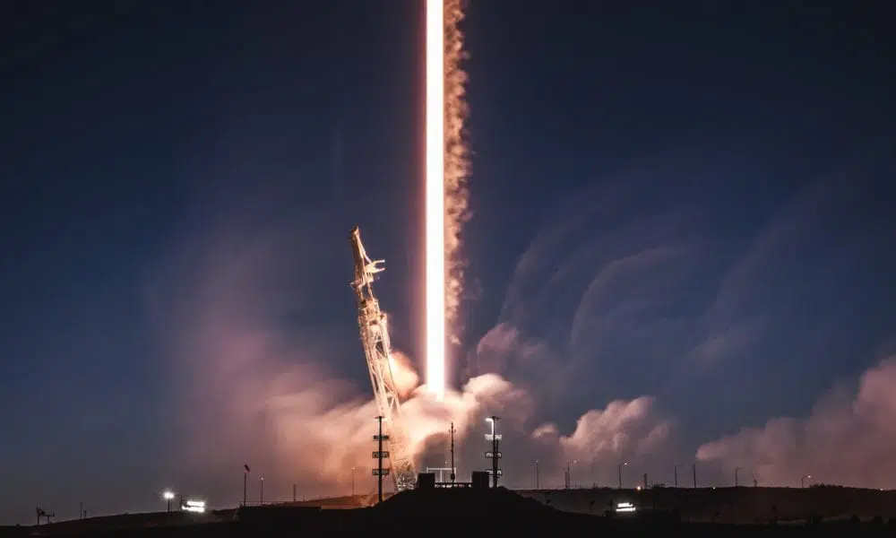

A SpaceX está aproveitando sua experiência na construção de foguetes e espaçonaves para implantar o sistema de internet banda larga mais avançado do mundo.
Como a principal fornecedora mundial de serviços de lançamento — e a única fornecedora de foguetes reutilizáveis de classe orbital —,
a SpaceX tem profunda experiência tanto em naves espaciais, quanto em operações em órbita.

Imagem retirada de: spacex.com
Saiba Mais Sobre a Starlink
MANTER O ESPAÇO LIMPO
A Starlink é a mais avançada tecnologia de mitigação de detritos espaciais,
atendendo ou excedendo todos os padrões regulatórios e do setor. Ao final de sua vida útil,
os satélites utilizarão seu próprio sistema de propulsão para desorbitar ao longo de alguns meses.
No caso improvável de o sistema de propulsão se tornar inoperável,
os satélites se queimarão na atmosfera terrestre em um a cinco anos,
o que é significativamente menos do que as centenas ou milhares de anos que ocorrem a altitudes maiores.